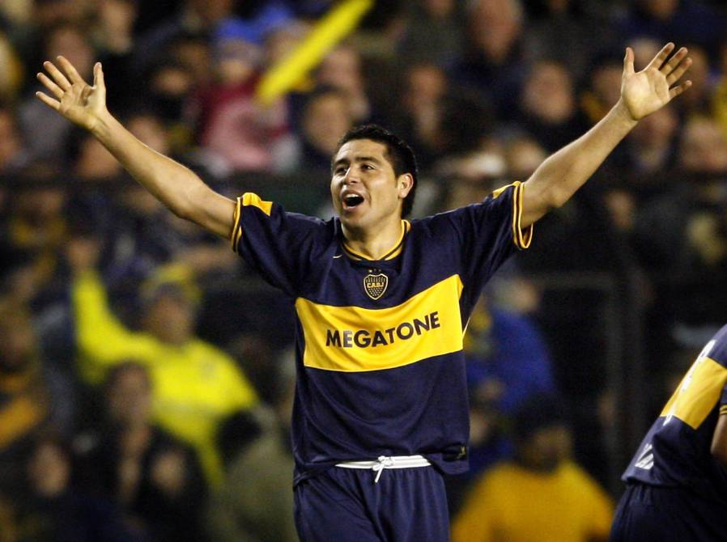

Debut en primera: 10/11/1996
Retiro: 25/01/2015
Partidos Jugados: 647
Goles: 124
Juan Román Riquelme es un ex-futbolista argentino que jugo como centrocampista ofensivo. Debutó en Boca Juniors, ganó 11 títulos y es considerado uno de los máximos ídolos en la historia del club.